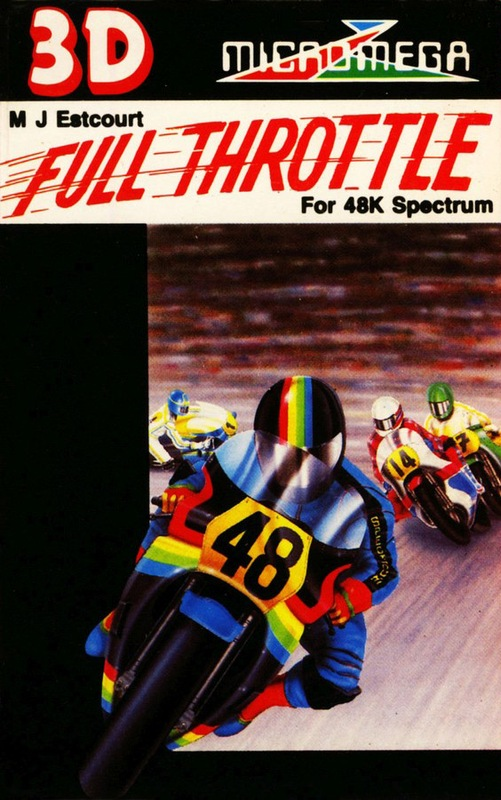
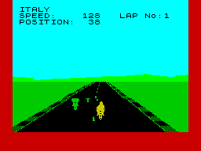

Full Throttle


{kind=link}

| Publisher: | Micromega |
| Price: | £6.95 |
| Year: | 1984 |
| Source: | CRASH, Issue 7 |

A new game from Micromega has become something to look forward to since Deathchase and Code Name Mat. Each one seems to be carefully crafted for a specific purpose from this software house that releases relatively few games. Full Throttle is the latest program from Mervyn Estcourt (Luna Crabs, Deathchase) and continues his theme of bikes, this time on the race track. Interestingly enough, Mervyn had never ridden a bike before work on this game. Towards the end, he felt he ought to get some experience, borrowed a friend’s and rode off into the sunset, or something, leaving Micromega worried for his safety. As you can now see, he was okay!
Full Throttle is to bikes what Psion’s Chequered Flag was to racing cars BUT with the addition of competition in the form of 39 other riders on the track. Unlike Deathchase where you only saw the handlebars of your machine, in Full Throttle your biker and machine are in full view ahead of you on the track. Maximum speed is 175mph and you can race on any of ten of the world’s top circuits with your 500cc motorcycle. The circuits provided are Donnington (UK), Mugello (San Marino), Jarama (Spain), Paul Ricard (France), Nurburgring (W. Germany), Misano (Italy), Silverstone (UK), Spa-Francochamps (Belgium), Rijeka (Yugoslavia) and Anderstorp (Sweden). Information is provided on recent circuit records, average speeds and the winning rider’s name.

The display screen is elegantly simply in layout with circuit name, speed, position and lap number superimposed over the landscape. This consists of the grass, moving background and the track itself, black with white centre lines and cross-hatched shaded edges. Circuits are selected via a full display map of each using SPACE to select and ENTER to return to the main menu. The number of laps to be raced may be selected between one and five. It is possible to practice without other riders on any circuit.
Full Throttle is also unique in that it is a serious racing game because there are no spectacular explosions should you crash. Leaving the track results in your slowing down — running into other riders will result in almost total loss of speed as a penalty.
CRITICISM
‘Have you ever seen Atari’s Pole Position racing car game — yes? Well here is Full Throttle and it’s a very similar form of game but on bikes. What’s more — it’s superb! The 3D is some of the best (if not the very best) I have seen. The game itself is fun to play and is exhilarating (I bet you can remember swaying on your seats playing Deathchase! This one will prove just as exciting). I found it extremely addictive partly due to the fact that the other riders are obviously of world class standard, and it will certainly be a while before I can pop any champagne corks! But I bet Micromega will be! With ten circuits to choose from, if (and when) you become champ at one, the rest will still prove very hard to conquer due to the fact that they each have their own characteristics, fast, lots of bends, even hairpins. Gotta be a Crash Smash!’
‘Atari will have to pull up their socks if they want to out throttle Full Throttle! Perhaps Pole Position will have more colour though. The 3D graphics in Full Throttle are marvellous, the most realistic looking yet. The effect of the road going into the distance works brilliantly — you can see double bends before it vanishes. The other riders are all green, same colour as the grass, and a first slight disappointment turns to admiration as you realise why this simplicity — it adds to the realism. Also it avoids those ugly Spectrum colour attribute problems that tend to so bedevil 3D road games. The physical behaviour of your machine is also quite realistic, skidding with speeding too much on bends, very controllable with use of brake and accelerator, just like the real McCoy. A neat control key touch is that the brake will always override the accelerator, so you never have to take your finger off the accelerator key. I’m convinced this is going to be a big hit both for people playing alone and for group get togethers, especially as best times and positions can be calculated. Great!’
‘First impressions of this game were that it was outstanding — a Pole Position like game where the road disappeared into the horizon and scrolled exceptionally well. On playing for a bit, I noticed it was even better, because the road does more than it does in Pole Position — it actually moves left and right across the screen instead of staying fixed (nearest the viewer) in the centre of the screen. Waiting on the starting grid I was startled when the flag went up and I couldn’t see the other 39 bikers for dust. Are my reactions so slow? The handling of the bike is very realistic. When you take a left hand corner, because of the G-force, the bike automatically moves over to the right, and the faster you take a corner, the more the rider leans over. Hardly any details have been left out, for instance, if you move over onto the grass, not only does the bike slow down but it actually bumps up and down as well. If you come to a stop, the rider puts his foot down to support the bike, and if you wait for a while, or are too slow, the other riders will lap you, roaring by either side, and swerving to pass you. One small niggle; perhaps the colour could have been better used on the background hills, just to break them up a bit, and perhaps my bike could have been a bit more definite a colour than yellow — but these are really minor and trivial points. This is an entirely new breakthrough in 3D road racing type games for the Spectrum, and one which will make games for other computers blush — the Spectrum’s done it again! Whatever has been said about 3D games before — this is a game that sets new standards. It’s the ultimate programming feat (to date!) — you’ll just have to buy it to see it.’
COMMENTS
| Control keys: | Good — 1/0 left/right, 9 to accelerate and bottom row to brake; R returns to menu and quits game or practice |
| Joystick: | ZX 2, Kempston, Protek, AGF |
| Keyboard play: | Very responsive |
| Use of colour: | Not much but it is used very well and avoids worst of attribute problems |
| Graphics: | Neat, well drawn bikes, good fast scrolling landscape and some of the best looking 3D yet |
| Sound: | Continuous, with starter signal, revving bikes and engine note change, skid sounds |
| Skill levels: | 1, although each track has its own difficulties |
| Lives: | N/A |
| Originality: | Not perhaps an original idea, but the development of the 3D certainly is on the Spectrum and this is the first serious bike, road racer |
| General rating: | Excellent. |
| Use of computer: | 94% |
| Graphics: | 88% |
| Playability: | 95% |
| Getting started: | 92% |
| Addictive qualities: | 85% |
| Value for money: | 90% |
| Overall: | 91% |